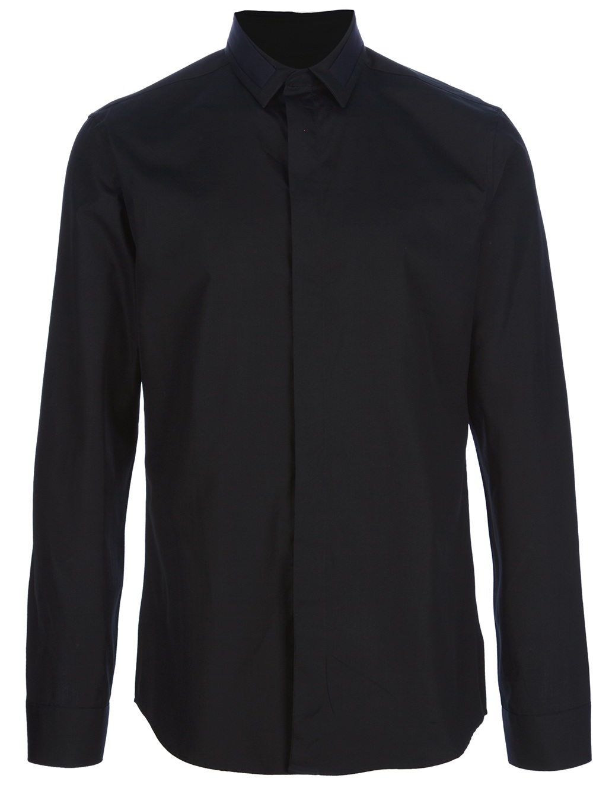
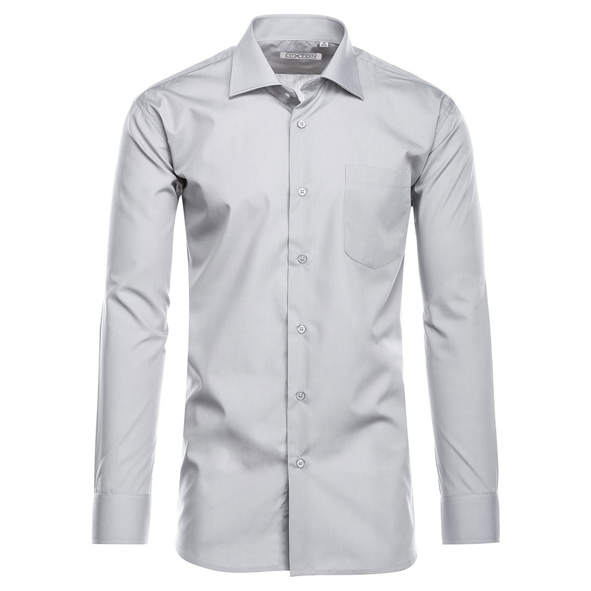
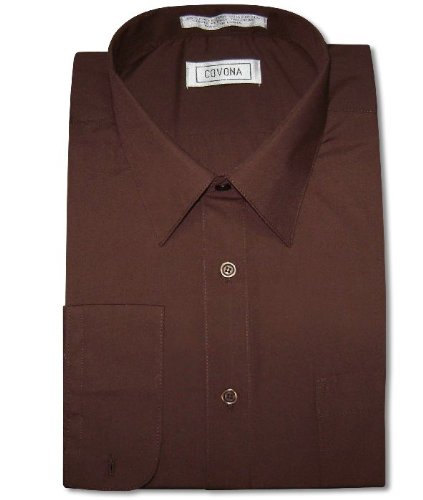
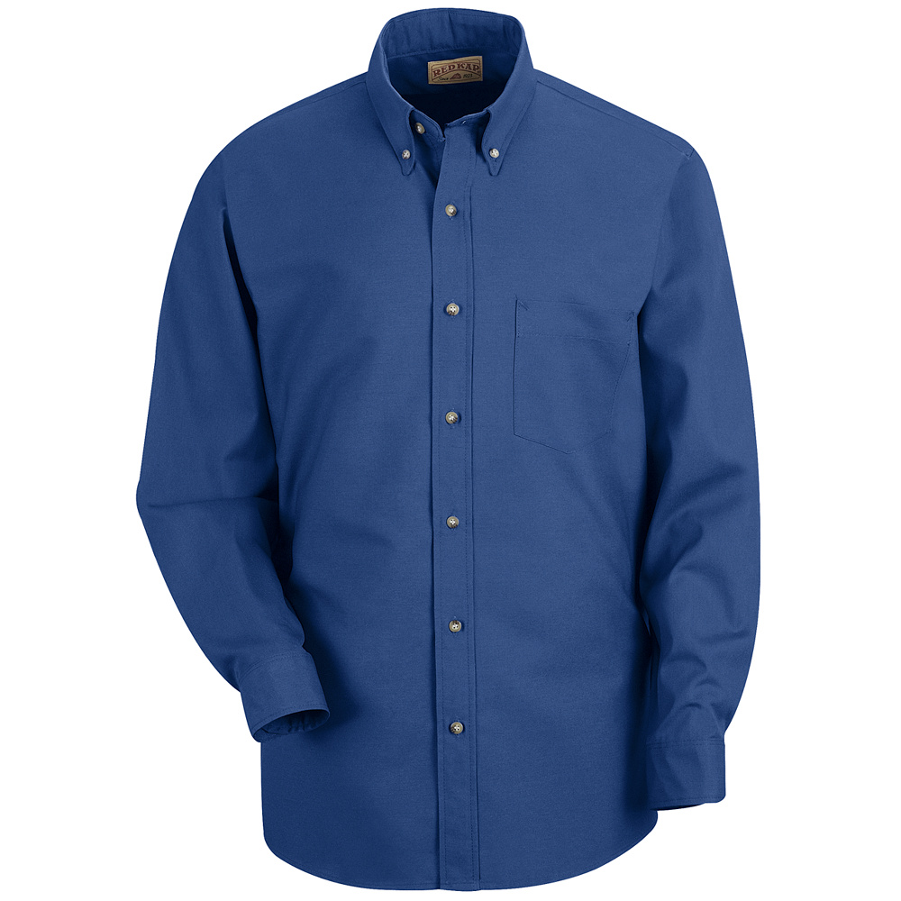
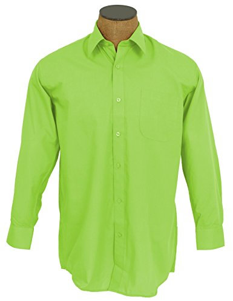
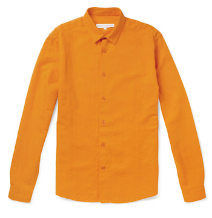
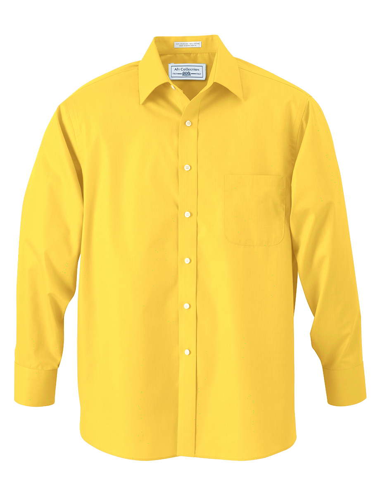
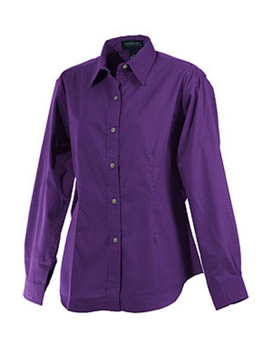

Your choice of color communicates a lot about the kind of person you are and how you see yourself.
The color you choose to wear could either help you ace that important job interview, or sink your name to the bottom of the list. This page is designed to help you pick the right color to get you hired.
Wear these!Black Gray Brown BlueAccording to two thousand human resource and hiring manager professionals who participated in a survey regarding career building, neutral colors like black, gray, brown and blue are the best colors to wear to an interview. Black seems to be an unapproachable color, however if you wear it properly, it represents sophistication and exclusivity. Black is regarded as a color which is taken seriously, and brands like Chanel and Saint Lauren use black to show their empowerment in the industry. Gray communicates indepence and proffesionalism. It shows that the wearer is an individual, who is self sufficient and thinks for themselves. Brown is a down to earth color that represents safety, warmth, dependability and reliability. Wearing a brown suit to a job interview will give the impression of reliability on the hirer. Blue is considered the best color to wear for a job interview as it exhibits confidence and trust. Specifically, navy blue is the best blue to wear for a job interview. |




|
Dont wear these!Green Orange Yellow PurpleThese are loud colors and give the message that you are a person full of fun and energy and attract attention, but they don’t give the message of trust and dependability which doesn’t makes them a good color selection to wear for a job interview. However, one can wear these colors at work for in-house meetings or happy hour gatherings. |




|